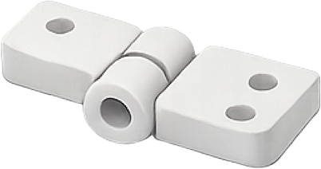
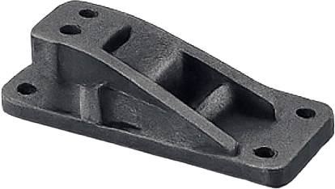
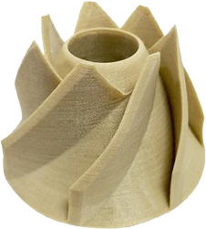
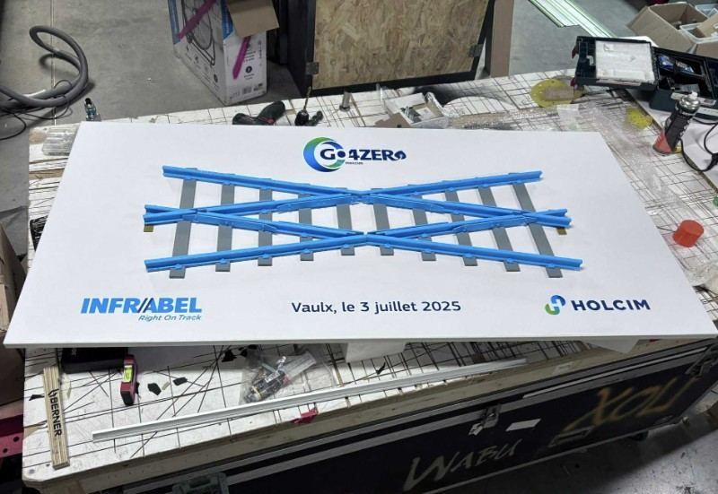

3D-printen& CNC-bewerking
Prototypes, technische onderdelen en kleine series, van stuk tot productie. SLS-, FDM- en SLA-3D-printen, CNC-frezen, 3D-scannen en modellering: alles in ons atelier. Offerte binnen 24 u.


Onze productieprocessen
Het proces wordt gekozen op basis van uw lastenboek: sterkte, precisie, oppervlakteafwerking, aantal, budget.
SLS
Robuuste functionele onderdelen in nylon, zonder supports. Complexe vormen en series.
Ontdekken →FilamentdepositieFDM
Prototypes, gereedschappen, grote onderdelen en meerkleurig. Van PLA tot PEEK en ULTEM.
Ontdekken →StereolithografieSLA
Zeer hoge definitie, gladde oppervlakken, fijne details: maquettes en zichtonderdelen.
Ontdekken →FrezenCNC
Nauwkeurige onderdelen uit het volle gefreesd: aluminium, messing, brons, titanium, technische kunststoffen.
Ontdekken →Digitalisering3D-scan
Reverse engineering, namaak van onvindbare onderdelen, vormcontrole.
Ontdekken →LasergravureLaser
Personalisatie, markering, nummering, snijden en signalisatie.
Ontdekken →Geboorde flens Ø80Sleep om te draaien
De machines van het atelier

Supermaker SLS1518
Supermaker SLS1518: compact industrieel SLS-printen, bouwvolume 150×150×180 mm, PA11, PA12, TPU, CF, GF, geïntegreerde poederrecyclage.
Fiche openen →
Supermaker SLS3540 Pro
Supermaker SLS3540 Pro: industrieel SLS-printen op groot formaat, bouwvolume 350×350×430 mm, PA11, PA12, TPU, CF, GF, geïntegreerde poederrecyclage.
Fiche openen →
Bambu Lab H2C
De Bambu Lab H2C print in FDM met tot 24 kleuren, ideaal voor meerkleurige en multimateriaalonderdelen.
Fiche openen →
Bambu Lab X1C
Bambu Lab X1C: snel FDM-printen, bouwvolume 256×256×256 mm, ideaal voor serieproductie en rapid prototyping.
Fiche openen →
Prusa Core One
Prusa Core One: industriële FDM-printer voor ASA, ABS, PC en PA, voor uw prototypes en kleine producties.
Fiche openen →
Modix Big Meter
3D-printen op zeer groot formaat met de Modix Big Meter.
Fiche openen →Zij vertrouwden ons hun projecten toe


Materialen, van PLA tot PEEK
29 gedetailleerde materiaalfiches: eigenschappen, voordelen, beperkingen en compatibele machines.










Van bestand tot onderdeel
Versturen
STEP-, STL- of 3MF-bestand, tekening, schets… of het te scannen onderdeel.
Analyse & offerte
Direct met 3D-bestand, op maat binnen 24 u.
Productie
Proces en materiaal gekozen volgens uw eisen.
Levering
Verzending of afhaling in het atelier in Welkenraedt.
Onze realisaties

Polypropyleen onderdeel voor een logopedist
Revalidatiehulpmiddel op maat voor een logopedist, in polypropyleen nagemaakt via 3D-printen en aangepast aan de noden van de patiënten.
Fiche openen →
Tandwiel van een vleesmolen in 3D nagemaakt
Gebroken tandwiel van een vleesmolen nagemaakt in PLA: reverse engineering in 1 u, onderdeel klaar in minder dan 48 u.
Fiche openen →
Audi S3-onderdelen nagemaakt in PAHT-CF
Namaak van beschadigde Audi S3-onderdelen in PAHT-CF en PLA: bumperrooster en S3-logokapjes.
Fiche openen →
Miniatuurrails voor de Infrabel-maquette
3D-geprinte miniatuurrails in PLA voor de inhuldigingsmaquette van Infrabel.
Fiche openen →
Krukvoeten voor vakantiewoningen in Herve
Krukvoeten van 40 cm in zwart PLA, op maat geprint voor Airbnb-vakantiewoningen in Herve: 24 u per stuk, gratis prototype.
Fiche openen →
Hekpunt nagemaakt in ASA
Gebroken decoratieve hekpunt, opnieuw getekend op basis van foto's en opnieuw geprint in UV-bestendig ASA op een Bambu Lab X1C.
Fiche openen →Beurzen en evenementen
We gaan de industrie tegemoet: Euronaval voor maritiem en defensie, Formnext voor additieve productie, Batibouw voor de bouw.


O&D Impression 3D in 8 antwoorden
De belangrijkste informatie over ons atelier, in één oogopslag.
Wie zijn wij?
O&D Impression 3D is een Belgisch productieatelier, in 2021 opgericht door Owen Schimmenti en Donovan Waucomont.
Waar is ons atelier?
Rue Trois Bourdons 52E, 4840 Welkenraedt, in de provincie Luik. We werken voor Luik, Verviers, Eupen, Spa, Hoei, Seraing en heel België.
Wat maken wij?
3D-printen in SLS, FDM en SLA, CNC-bewerking, 3D-scannen, 3D-modellering en lasergraveren: prototypes, technische onderdelen, vervangstukken en kleine series.
Met welke machines werken wij?
11 machines in ons atelier: Supermaker SLS1518, Supermaker SLS3540 Pro, Bambu Lab H2C, Bambu Lab X1C, Prusa Core One, Modix Big Meter, INTAMSYS Funmat HT, Anycubic Photon M7 Max, ToolDance X1, Scanner 3DeVOK MT, xTool F1.
Welke materialen gebruiken wij?
29 gedocumenteerde materialen: nylon PA12 en PA11, TPU, PLA, PETG, ABS, ASA, PEEK, PEKK, ULTEM, aluminium, messing, koper, brons, titanium en technische kunststoffen.
Hoe een offerte krijgen?
Directe online offerte op basis van een 3D-bestand (STL, STEP, 3MF), of een offerte op maat binnen 24 u.
Voor wie werken wij?
Bedrijven, overheden en makers: bijvoorbeeld Walibi, Infrabel, de Stad Spa of Lx Cars.
Hoe contact met ons opnemen?
Telefonisch op +32 471 68 66 53, per e-mail via o.d3dindustrie@gmail.com of via het contactformulier.
Uw project voorbereiden
Quiz: welke technologie?
Enkele vragen om te weten welk proces bij uw onderdeel past.
Openen →ToolDirecte offerte
Upload uw STL, kies het materiaal: directe schatting.
Openen →ToolMateriaalvergelijker
PLA vs PETG, PEEK vs PEKK vs Ultem, FDM vs SLS vs SLA…
Openen →ToolGids materialen & technologieën
De volledige gids om proces en materiaal te kiezen.
Openen →Een onderdeel te maken?
Stuur uw 3D-bestand of beschrijf uw behoefte: directe offerte met bestand, offerte op maat binnen 24 u.